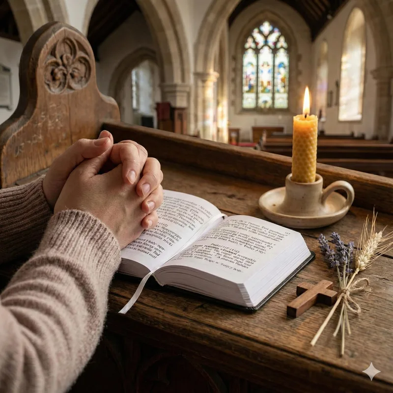

Sunday intercessions
Prayer is shared during Sunday worship. Check the Calendar for upcoming services and their details.
PRAYER
Prayer is an important part of Christian life and of the shared worship and care of the parish.
A quiet place to begin
Prayer is central to Christian life. The parish trusts that God hears and answers prayer, though not always as we expect and sometimes in surprising ways.

Shared worship
Praying together is part of the life of the parish. Sunday intercessions bring the needs of the church, the community and the wider world into worship.
Prayer is shared during Sunday worship. Check the Calendar for upcoming services and their details.
The parish has also held Compline and occasional prayer workshops. For current opportunities, please ask the church or check the Calendar.
You do not have to carry it alone
The parish wants to offer prayer for people who are struggling. If you would like a prayer request to be included in Sunday prayers, or would value individual prayer with the priest, please contact the church and ask about the current arrangements.
Prayer across the parish
The parish has produced a Cycle of Prayer twice a year, naming three causes for each Sunday: two within the community and one further afield. A previous edition is kept in the parish archive below; it covers August 2023 to March 2024 and is not a current prayer schedule.
A moment of quiet
If you would like to speak with the priest or ask about individual prayer, please get in touch through the parish Contact page.